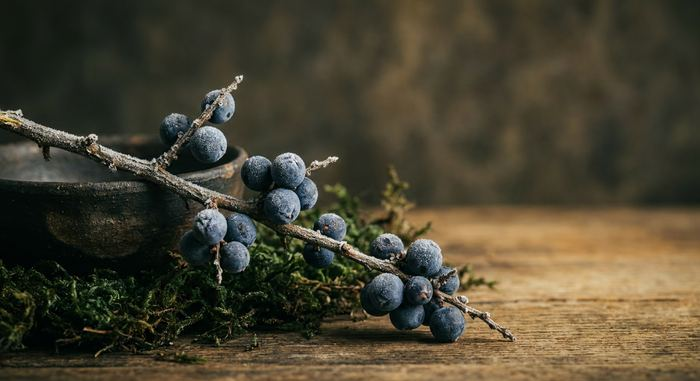

ジンの原料と作り方 何でできてる？国産ジン297銘柄の公式の原材料から
公開 2026年10月30日 最終更新 2026年10月30日 運営者情報
ジンの原料と作り方を、EUの規則・日本の酒税法と国税庁の資料、そして国産ジン297銘柄の公式の記載で確かめました。
ジンの原料は「ベースのお酒＋ジュニパーベリー＋ボタニカル」
ジンは、ベースのアルコールに、ジュニパーベリーなどボタニカルと呼ばれる植物で香りをつけたスピリッツです。国産ジン297銘柄の公式を調べると、ベースのお酒の記載があった156銘柄のうち42銘柄が焼酎・泡盛で、酒粕や日本酒から造ったベースも22銘柄ありました。
目次
ジンの定義と原料：何でできてる？
EUの規則は、ジンを「農産物由来のエチルアルコールにジュニパーベリーで香りをつけたスピリッツ」とし、度数は37.5%以上、味わいは主にジュニパーであることと定めています。蒸留して造る「蒸留ジン」は、度数96%以上の農産物由来のアルコールを、ジュニパーベリーとほかの天然のボタニカルと一緒に蒸留したもので、ジュニパーの味が主体であることが条件です。
日本の酒税法には「ジン」という品目がありません。ジンは「スピリッツ」に入り、国税庁の通達は、蒸留するときに出るアルコールに他の物品の成分を移したものを「スピリッツ（いわゆるジン等）」としています。度数やジュニパーの量を決めた日本のジンの定義は、酒税法にはありません。
出典：EU規則 2019/787 附属書I カテゴリー20・21・酒税法 第3条・国税庁 酒税法の解釈通達。確認日：2026年10月30日。EUの規則は、EUで売るジンとEUで造って輸出するジンの決まりです。日本の法律ではなく、国産ジンには当てはまりません。
ベースのお酒：国産ジンは焼酎・日本酒ベースも多い
国産ジン297銘柄の公式サイト・公式通販を1銘柄ずつ調べ、ベースのお酒が書かれていた156銘柄を数えました。いちばん多いのは焼酎・泡盛で42銘柄、内訳は芋焼酎8・米焼酎7・麦焼酎4・泡盛3、種類の書かれていない焼酎が20です。
数え方：公式の原材料名か、「〇〇をベースに」のような公式の説明にベースの記載があったものだけを数えました。「スピリッツ」のみは、そう書かれているだけで何から造られたかは分からないものです。「自社のジンを熟成・再蒸留」は、自社のジンを樽で寝かせたり、ボタニカルを足して蒸留し直したりした銘柄です。「そのほか」は、ベースの酒の商品名だけが書かれているもの、ビール・サトウキビ・パン・野草の発酵などから造ったもの、焼酎とほかのスピリッツを合わせたものです。名前が同じ容量違いは1銘柄で、梅酒を蒸留した香雪は公式がジンと名乗っていないため数えていません。残りの141銘柄は公式にベースの記載が見つからず、数に入っていません。確認日：2026年10月30日。
焼酎・泡盛ベース：芋・米・麦・泡盛
焼酎の蔵が造るジンは、自社の焼酎をベースにすることがあります。芋焼酎はAKAYANE CRAFT GIN、424GIN -Juniper berry only-、Komaki Ginなど、米焼酎は千代むすびクラフト・ジン 因伯人、クラフトジン岡山、夕凪GINなど、泡盛はまさひろオキナワジン RECIPE 02、JAPANESE CRAFT GIN ORI-GiN 1848、YAESEN GIN 01です。
「弊社の麦焼酎にジュニパーベリーと柚子皮を漬け込み再留したジンです。」OMOYA GIN・重家酒造・公式
酒粕・日本酒由来：酒蔵ならではのジン
日本酒の蔵では、酒粕を蒸留した焼酎や、日本酒そのものを蒸留したスピリッツをベースにするジンがあります。酒粕焼酎はLAST ELEGANT、The Japanese Craft GIN 黄金井、NUMBER EIGHT GIN - Yokohama Dry Ginなど、日本酒は和GIN、LAST EN -縁-、AMRTA GIN Limited Edition 02などです。
「ベーススピリッツに用いた『酒粕焼酎』の甘く華やかな香りとまろやかな味わい、そして、ラベンダーやピンクペッパー、カルダモン、花椒などのボタニカルが複雑に重なりあう、重奏的で優雅なジンです。」LAST ELEGANT・東京リバーサイド蒸溜所・公式
「和ジンは、日本酒を蒸留し１０年間貯蔵したスピリッツをベースにした日本独自のクラフトジンです。」和GIN・明利酒類・公式
米のスピリッツ・醸造アルコール・原料用アルコール
米から造ったスピリッツをベースにするのはTOM GIN #31 いたばし暗渠、blanc、黒澤 白樺GINなど。醸造アルコールはohoro GIN Standard、BRONCO 20、槙 -KOZUE-など、原料用アルコールはYORIMICHI フレーバード・ジン／キンモクセイ、TL Pearce Tokyo Dry Gin Classic、TOKYO SPICE GINなどです。
「『季の美 京都ドライジン』は、お米からつくるライススピリッツとボタニカルに玉露や柚子、赤松や山椒など日本ならではの素材を積極的に取り入れ、伏見の柔らかくきめ細やかな伏流水を使用。」季の美 京都ドライジン・京都蒸溜所・公式
変わったベースのお酒
THE HERBALIST YASO GIN EXTRA HERBは野草の発酵から生まれた自社のアルコール、日の丸ジン Bé-Ginはパンの端材を原材料に蒸留したもの、naturadistill 固有種蒸溜酒はサトウキビ由来のニュートラルスピリッツをベースにしています。季の美 エディションKのように、自社のジンを樽で熟成させた銘柄もあります。
「野草類を主体とした80種類の原材料からなる植物発酵エキスから生まれた自社製造のスピリッツを使用したオリジナルジン。」THE HERBALIST YASO GIN EXTRA HERB・越後薬草蒸留所・公式
ラベルの「原材料名」の読み方
食品表示基準では、酒類は原材料名を表示しなくてよいことになっています。国税庁の資料も「酒類は『原材料名』、『アレルゲン』、『原産国名』の表示を要しないこととされており」と説明しています。国産ジン297銘柄のうち、公式に原材料名を載せていたのは93銘柄でした。
| 原材料名の先頭の書き方 | 銘柄数 | 意味 |
|---|---|---|
| スピリッツ | 21 | ベースが何から造られたかは、この表示だけでは分からない |
| 醸造アルコール | 14 | 清酒の表示基準では、でんぷんや糖分を含む原料を発酵させて蒸留したアルコール |
| 原料用アルコール | 12 | 酒税法では、度数の決まりを除いて焼酎の規定にあたる酒類で、45度を超えるもの |
| そのほか | 46 | 本格焼酎・芋焼酎・酒粕焼酎・日本酒などの名前や、ボタニカルから書くもの |
ラベルの「（国内製造）」は、その原料を国内で造ったという意味です。国税庁は、酒類の原料アルコールについて「そのほとんどが輸入されたエチルアルコールから製造されています」と説明し、国内で蒸留したものなので「国内製造」と表示する、としています。これは原料アルコール全体の説明で、個別のジンのベースが輸入のアルコールだということではありません。
出典：国税庁 食品表示法における酒類の表示のQ&A・同 原料原産地表示関係・酒税法 第3条第17号・清酒の製法品質表示基準。醸造アルコールの定義は清酒の基準のもので、ジンに当てはめる決まりではありません。
ジュニパーベリーとは？ジンに必ず入る？

ジュニパーベリーは、セイヨウネズの実です。植物の分類はヒノキ科の針葉樹で、マツ科ではありません。米国農務省森林局の資料によると、名前はベリーでも、針葉樹の球果が液果のように丸く熟したもので、熟すまでに2年ほどかかります。
松そのものを使う国産ジンもあります。季の美 京都ドライジンは赤松、KOBE GIN UMIは黒松、香の森は松葉をボタニカルに挙げています。
EUの規則では、ジンの味わいは主にジュニパーであることが条件です。日本の酒税法にはジュニパーを使う決まりはなく、原材料名にジュニパーが書かれていない国産ジンもあります。同じAWA GINでも、720ml版の原材料名は「すだち果皮：徳島県産、ゆず果皮：徳島県産（木頭ゆず）、阿波晩茶：徳島県産、山椒（乾燥）：国内産、米スピリッツ：徳島県産山田錦」で、クリアボトルの原材料名には「ジュニパーベリー：外国産」と書かれています。
出典：GBIF・米国農務省森林局 FEIS・AWA GIN 720ml 公式・AWA GIN クリアボトル 公式。セイヨウネズの学名は Juniperus communis です。ジュニパーを使っているかどうかは、原材料名の記載だけでは分からない場合があります。
国産ジンに多いボタニカル
Gin-DBに載っている国産ジン297銘柄のボタニカル欄で、その素材の名前が出てくる銘柄を数えました。ボタニカル欄は公式の記載からとっていて、一部しか公開していない銘柄や記載がない銘柄も含みます。柚子・山椒・緑茶のような和の素材がよく使われています。
公式がすべてのボタニカルを公開していない銘柄も多いため、実際に使われている数はこれより多いことがあります。ジュニパーは公式の一覧に書かれないことがあるため外しました。素材ごとの銘柄はボタニカル逆引きで探せます。
ジンの作り方：漬け込み・蒸留・加水の手順
蒸留ジンは、ベースのアルコールをジュニパーベリーやボタニカルと一緒に蒸留して造ります。国税庁の通達は、蒸留するときに出るアルコール蒸気に他の物品の成分を移すものも、蒸留の前に漬け込んでから蒸留して香りが残るものも、「いわゆるジン等」のスピリッツとして扱うとしています。生産者の公式の説明から、代表的な造り方を紹介します。
手順の例：季の美の造り方
京都蒸溜所の公式の説明から、季の美ができるまでの順番です。
- 漬け込む「11種類のボタニカルを6つのエレメントに分類し、別々にライススピリッツに浸漬」
- 蒸留する「浸漬後は蒸溜器でエレメント毎に蒸溜します。」
- 水と合わせる「クリーンで上質な仕込み水と6種類の蒸溜液を混和（ブレンド）します。」
- 寝かせる「加水後はタンクで後熟することによりフレーバーを落ち着かせ」
出典：京都蒸溜所 公式
漬け込んでから蒸留し、ブレンド：ROKU〈六〉
「豊かな日本の四季が育んだ六種の和素材を、最も良い状態にある“旬”の時期に収穫し、鮮度を保ったまま浸漬・蒸溜しています。」ROKU〈六〉・サントリー公式
ROKUの公式は、形の異なる4基の蒸溜器を使い分け、ボタニカルごとの特長に合わせて蒸溜した原料酒をブレンドすると説明しています。
漬け込みと別の方法を組み合わせる：SAKURAO GIN・SS.L
漬け込みに、別の香りの移し方を組み合わせる蔵もあります。SAKURAO GINの公式は「スティーピングとヴェイパー製法で製造したジン」、薩摩酒造のSS.Lの公式は「浸漬法とバスケット法の併用を採用する事とした」と説明しています。
出典：SAKURAO GIN 公式・薩摩酒造 SS.L 公式・国税庁 解釈通達
樽で熟成させるジン
蒸留したジンを樽で寝かせる銘柄もあります。季の美 エディションK・季の美 エディションG・赤鳥居 SAKE GIN -CASK EDITION-・Alembic Cask Rested Ginなどです。
EUの規則では、蒸留せずにアルコールに香料を加えるだけのものも「ジン」と名乗れますが、「蒸留ジン」とは名乗れません。ロンドン・ジンは、蒸留のあとに決められた原料と水以外を加えず、着色しないことなどが条件です。
ジンと焼酎・ウォッカの違い
酒税法では、蒸留するときに出るアルコールに植物などの成分を移すと焼酎ではなくなり、品目はスピリッツになります。国税庁の通達は、これを「いわゆるジン等」としています。
| お酒 | 酒税法の品目と決まり |
|---|---|
| ジン | スピリッツ。蒸留するときに出るアルコールに他の物品の成分を移したものは焼酎から除かれ、国税庁の通達は「いわゆるジン等」とする |
| ウォッカ | スピリッツ。しらかばの炭などでこしたものは焼酎から除かれ、通達は「いわゆるウオッカ等」とする |
| 連続式蒸留焼酎 | 連続式蒸留機で蒸留した、アルコール分36度未満の酒類 |
| 単式蒸留焼酎 | 穀類・芋類などを発酵させ、連続式以外の蒸留機で蒸留した、アルコール分45度以下の酒類 |
焼酎をベースに造ったジンも、ボタニカルの香りを移して蒸留すれば、品目はスピリッツになります。糖分など、アルコール以外に溶けている成分をエキス分といい、これが2度以上になると品目はリキュールです。
家でジンは作れる？
結論から言うと、蒸留して造ることは免許がなければできません。自分で飲むために、市販の20度以上のお酒にジュニパーベリーなどを漬けることは、決められた物品に当たらなければ認められています。香料は使えず、できたものは売れません。
お酒を造るには、品目ごと・製造場ごとに税務署長の製造免許が必要です。酒税法第7条の決まりで、免許を受けずに造ると、第54条により原則10年以下の拘禁刑または100万円以下の罰金です。酒税の額によっては、罰金がこれを超えることもあります。
例外として、自分で飲むために、酒税が納められた20度以上のお酒に物を漬ける「混和」は、製造とみなされません。ただし、米・麦・とうもろこしなど決められた穀類やでん粉・こうじ、ぶどう、香料などは混和してよい物品から除かれています。混和したあとに、アルコール分が1度以上増える発酵があってもいけません。蒸留は混和ではないので、この例外に当たりません。
出典：酒税法 第7条・第43条・第54条・酒税法施行令 第50条・酒税法施行規則 第13条・国税庁 自宅で梅酒を作るQ&A。
ベースのお酒で選ぶ国産ジン
公式がベースのお酒を書いている銘柄から、種類ごとに通販で扱いのあるものを選びました。限定品と売り切れは除いています。在庫と価格はリンク先で確かめてください。
ジャパニーズクラフトジン 樹々ベース：焼酎・泡盛濵田酒造
詳細を見る ›LAST ELEGANTベース：酒粕・日本酒由来東京リバーサイド蒸溜所
詳細を見る ›KITAYA CRAFT GINベース：酒粕・日本酒由来喜多屋
詳細を見る ›季の美 京都ドライジンベース：米のスピリッツ京都蒸溜所
詳細を見る ›ohoro GIN Standardベース：醸造・原料用アルコールニセコ蒸溜所
詳細を見る ›PR ／ アフィリエイトリンクを含みます。
よくある質問
Q1. ジンの原料は何？
ベースのお酒、ジュニパーベリー、そのほかの香りの植物であるボタニカルです。EUの規則は、ジンを農産物由来のエチルアルコールにジュニパーベリーで香りをつけたもので、度数37.5%以上と定めています。国産ジンでは、ベースのお酒の記載があった156銘柄のうち42銘柄が焼酎・泡盛でした。
Q2. ジンは何からできているお酒？穀物？
EUの規則が定めるベースは「農産物由来のエチルアルコール」で、穀物に限りません。国産ジンの公式の記載では、芋焼酎・米焼酎・麦焼酎・泡盛・酒粕焼酎・日本酒・醸造アルコールなど、ベースはさまざまです。
Q3. ジュニパーベリーとは？松の実？
セイヨウネズ（Juniperus communis）の実で、植物の分類はヒノキ科の針葉樹です。マツ科ではありません。米国農務省森林局の資料によると、名前はベリーでも液果のような球果で、熟すまでに2年ほどかかります。
Q4. ジンと焼酎の違いは？
酒税法では、蒸留するときに出るアルコールに他の物品の成分を移したものは焼酎から除かれ、国税庁の通達は「スピリッツ（いわゆるジン等）」としています。焼酎をベースに造ったジンも、ボタニカルの香りを移して蒸留すればスピリッツになります。
Q5. ジンとウォッカの違いは？
国税庁の通達は、しらかばの炭などでこしたものを「スピリッツ（いわゆるウオッカ等）」、蒸留するときに他の物品の成分を移したものを「スピリッツ（いわゆるジン等）」としています。日本ではどちらも品目はスピリッツです。
Q6. 原材料名に「スピリッツ」とだけ書いてあるのは？
その表示だけでは、ベースのお酒が何から造られたかは分かりません。国税庁は、原料アルコールについて「そのほとんどが輸入されたエチルアルコールから製造されています」と説明していますが、これは全体の話で、個別の銘柄のベースを示すものではありません。
Q7. 原材料名が書いていないジンがあるのはなぜ？
食品表示基準では、酒類は原材料名の表示が求められていないからです。国産ジン297銘柄のうち、公式に原材料名を載せていたのは93銘柄でした。
Q8. 家でジンは作れる？
蒸留して造るには製造免許が必要で、免許なしで造ると原則10年以下の拘禁刑または100万円以下の罰金です。自分で飲むために、酒税が納められた20度以上のお酒にジュニパーベリーなどを漬ける「混和」は、決められた物品に当たらなければ例外として認められています。香料は混和してよい物品から除かれ、できたものは売れません。
関連ページ
ボトルの写真・イメージ画像はイメージです。20歳未満の飲酒は法律で禁止されています。飲酒運転は法律で禁止されています。